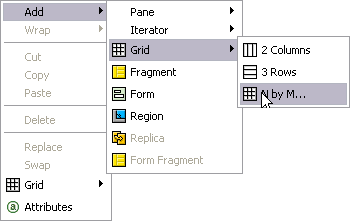
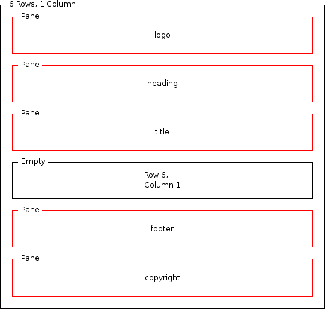
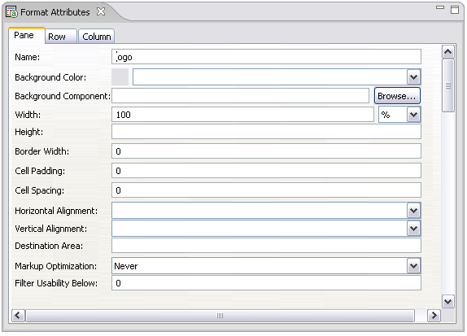
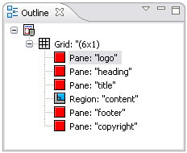

Main layout
When designing a layout you start by creating a grid that defines the main structure of the
page. Next, you add elements such as panes and regions, which hold targeted XDIME page
content.
Using grids 
Grids give a page layout the basic structure for your content. You can nest grids inside one
another, and also wrap one grid element in another.
- Make sure the main.mlyt layout is opened in the Layout Editor
- Pick the 'Default' variant from the list of variants and click on the
Design tab at the bottom of the window
- Right-click on the Design Layout area and pick
Add | Grid | N by M...

- Create a 6 rows by 1 column grid
Canvas layouts and panes
MCS displays page content in the individual panes, each of which must have a unique name
within the layout. In the XDIME, you use the pane names to specify where the content of the
file should appear.
- Right-click on the top row of the grid and pick Add |
Pane | Pane. This pane will hold a widget logo.
- Use the Format Attributes view to set the pane attributes. See Adding a format
below for details.
- The pane in the second row should be named 'heading'
- The third row will contain a title of the widget
- Leave the fourth row of the grid untouched for now
- The two bottom rows will hold the footer and copyright notice

Regions
Each web page is a template with some common content. Those common elements are represented
by panes. In addition, a web page may include a set of areas that can be occupied by variable
content. Those areas are called regions.
- Right-click on the fourth row of the grid and pick Add |
Region
- Name the new region 'content'
Adding a format
When you select a layout format in the layout Design view or
Outline view, you can set different combinations of attributes,
depending on the format.
- Click on the pane or region you want to set the format attributes for
- In the Format Attributes window set its attributes, starting with
the name

- Set the format attributes for the remaining panes and regions. The table in the following
section lists all the attributes and their values.
Layout attributes
These are the format attribute values that you need to set for the panes in the main
layout.
| Name | Width | Border Width | Cell Padding | Cell Spacing | Markup Optimization | Filter Usability Below |
|---|
| logo | 100% | 0 | 0 | 0 | Never | 0 |
|---|
| heading |
|---|
| title |
|---|
| content | n/a | n/a | n/a | n/a | n/a | n/a |
|---|
| footer | 100% | 0 | 0 | 0 | Never | 0 |
|---|
| copyright |
|---|
Outline view
The Outline window allows you to preview the layout structure in a
compact form.
- Click on a variant, in the Variants section of a Layout
Editor, for which you want to see an outline
- In the Outline window expand grids to reveal the full layout
structure

- Select an element, by clicking on it, to preview and edit its properties in the
Format Attributes window